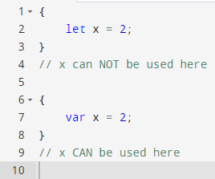

In JavaScript, the scope of a variable determines where it can be accessed within the code. There are three types of scope: block scope, function scope, and global scope. The keywords `var`, `let`, and `const` are used to declare variables, but they have different scoping rules.
`var` is function-scoped, meaning that if it is declared within a function, it can only be accessed within that function. If it is declared outside of any function, it has global scope and can be accessed from anywhere in the code.
`let` and `const`, on the other hand, are block-scoped. This means that if they are declared within a block (a section of code surrounded by `{}`), they can only be accessed within that block. If they are declared outside of any block, they have global scope.
Here’s an example to illustrate the difference:

In the first block, x is declared using let, so it can only be accessed within that block. In the second block, x is declared using var, so it can be accessed outside of the block as well
hello
hello